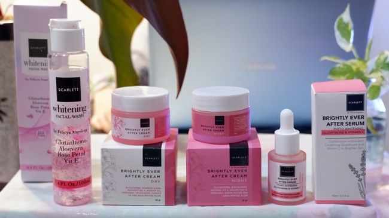
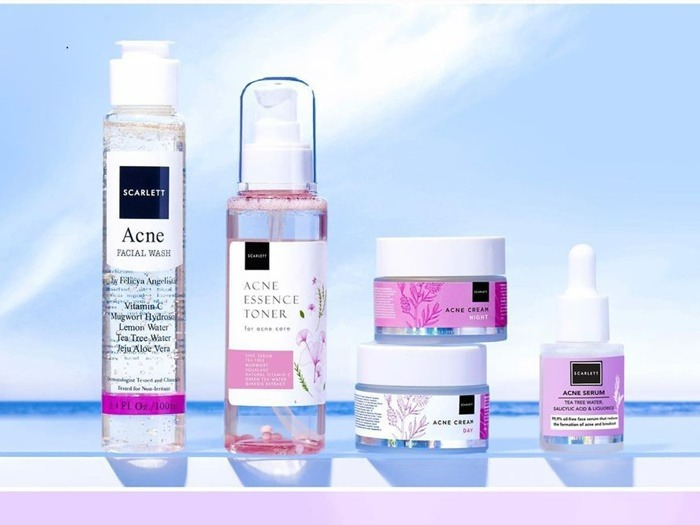
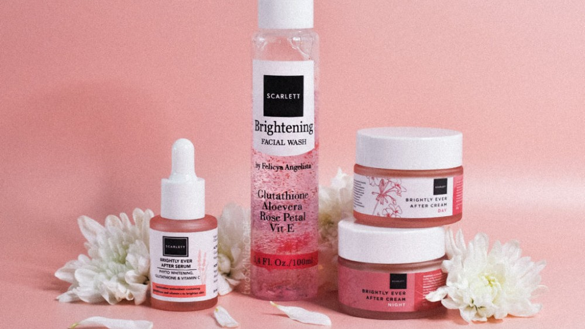
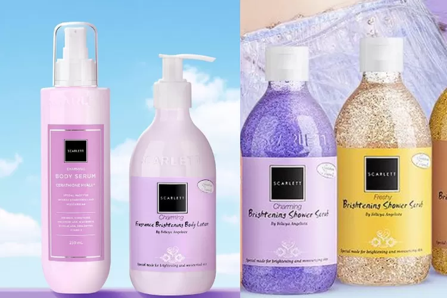
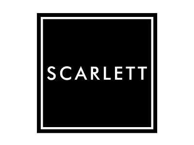
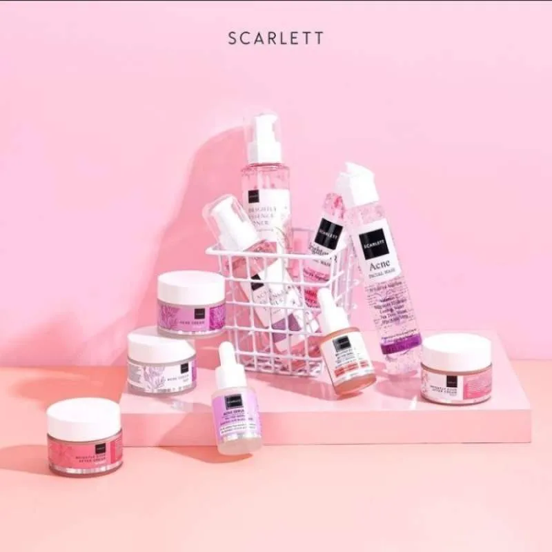
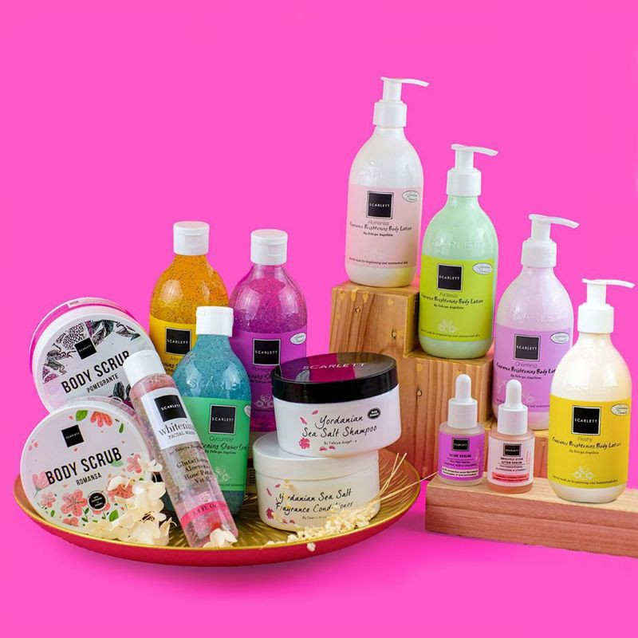
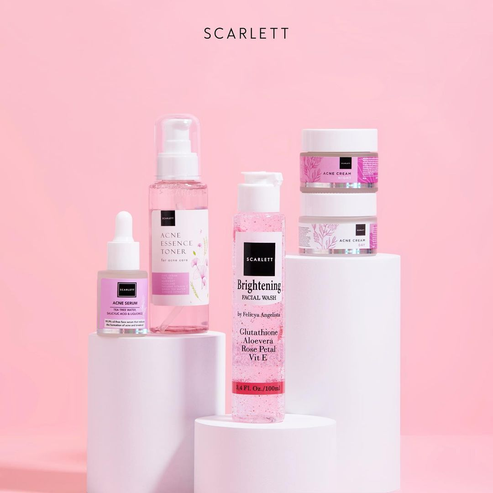
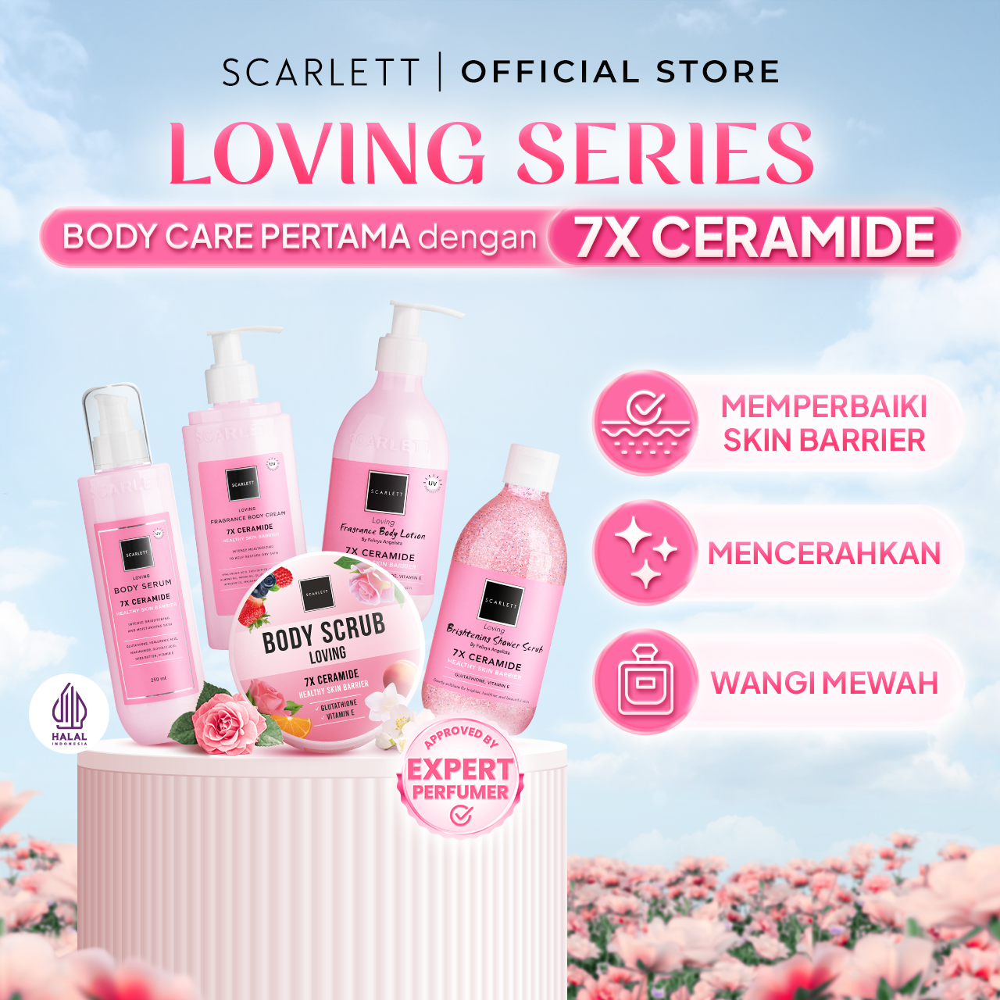

PROMOSI
skincare, jun 5,2024
kami menghadirkan produk skincare untuk wanita indonesia
Skincare Scarlett Whitening merupakan salah satu produk perawatan kecantikan yang berasal dari Indonesia Scarlett Whitening adalah produk perawatan kulit atau skincare yang saat ini sedang naik daun. Pemilik produk Scarlett Whitening adalah Felicya Angelista, sukses meluncurkan produk perawatan kulit yang digemari oleh kaum wanita bahkan pria. Semua produk dari Scarlett dibanderol dengan harga terjangkau, sehingga cocok digunakan oleh berbagai lapisan masyarakat. Bahkan, jenis untuk perawatan kulitnya pun disesuaikan dengan kebutuhan kulit orang-orang di Indonesia, sudah BPOM, halal, sehingga aman digunakan.,Produk yang satu ini cukup terkenal dengan keunggulannya yang bisa mencerahkan kulit. .
BODY SCRAB
body scrab, jun 5,2024

Rasakan manfaat langsung dengan produk kami yang memberikan efek instan pada kulit
Produk kedua adalah Scarlett Whitening Shower Scrub. Produk yang satu ini merupakan sabun cair keluaran Scarlett Whitening yang memiliki scrub halus yang ampuh mengangkat sel kulit mati di tubuh kamu yang mana hal tersebut akan memberikan efek halus dari kulit kamu. .
Glowtening serum
serum, jun 5,2024
Produk Scarlett Whitening Glowtening Serum juga diklaim mampu mengatasi berbagai masalah kulit wajah. Salah satu rangkaian dari Scarlett ini memiliki kandungan aktif seperti vitamin C dan glutathione yang ampuh mencerahkan kulit, serta berbagai kandungan lain seperti lavender water, niacinimide, dan phyto whitening. Kandungan kandungan tersebut tentunya berfungsi sebagai antioksidan, meremajakan kulit, membantu menyamarkan bekas luka atau noda, serta melembabkan kulit wajah kamu. .
Whitening Facial Wash
facial Wash , jun 5,2024
nutrisi kulit wajah mu dengan serum
jika fokus utama kamu adalah mengurangi bekas bekas noda hitam,scarlet brightly ever after juga terdapat toner adalah pilihan ideal,toner ini mengandung bahan niacinamide yang membantu menyamarkan noda hitam secara keseluruhan.
Whitening Shower Scrab
Shower Scrab, jun 5,2024
skincare untuk tubuh
Produk perawatan badan dari Scarlett termasuk cukup populer di berbagai kalangan. Produk perawatan badan dari Scarlett, antara lain sabun mandi cair, body scrub, serta hand and body lotion. Sabun mandi cairnya terdiri dari beberapa varian, antara lain Coffee, Jolly, Cucumber, Mango, Pomegranate, Charming, dan Freshy. Sabun mandi tersebut teksturnya berupa shower scrub, sehingga terdapat butiran-butiran scrub untuk memaksimalkan pembersihan kotoran di badan dan harganya juga terjangkau loh cuman dibandrol 75rb an aja.
About me
popular post
   Follow Me
Penasaran seampuh apa sih? Yuk cobain sekarang juga! kamu bisa menghubungi saya melalui nomer wa +62139531